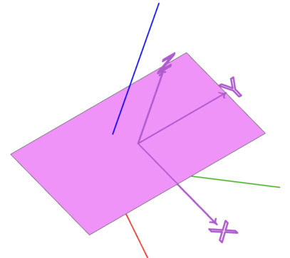
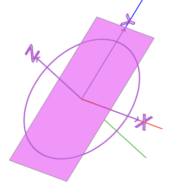
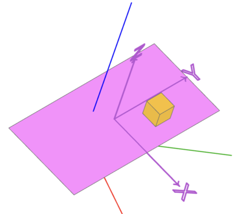
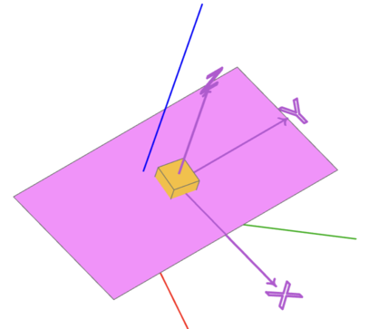
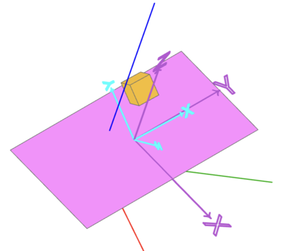
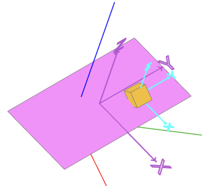

Location arithmetic for algebra mode
Position a shape relative to the XY plane
For the following use the helper function:
def location_symbol(self, l=1) -> Compound:
return Compound.make_triad(axes_scale=l).locate(self)
Positioning at a location
loc = Location((0.1, 0.2, 0.3), (10, 20, 30)) face = loc * Rectangle(1,2) show_object(face, name="face") show_object(location_symbol(loc), name="location")
Positioning on a plane
plane = Plane.XZ face = plane * Rectangle(1, 2) show_object(face, name="face") show_object(plane_symbol(plane), name="plane")
Note that the
x-axis and they-axis of the plane are on thex-axis and thez-axis of the world coordinate system (red and blue axis)
Relative positioning to a plane
Position an object on a plane relative to the plane
loc = Location((0.1, 0.2, 0.3), (10, 20, 30)) face = loc * Rectangle(1,2) box = Plane(loc) * Pos(0.2, 0.4, 0.1) * Box(0.2, 0.2, 0.2) # box = Plane(face.location) * Pos(0.2, 0.4, 0.1) * Box(0.2, 0.2, 0.2) # box = loc * Pos(0.2, 0.4, 0.1) * Box(0.2, 0.2, 0.2) show_object(face, name="face") show_object(location_symbol(loc), name="location") show_object(box, name="box")
The
x,y,zcomponents ofPos(0.2, 0.4, 0.1)are relative to thex-axis,y-axis orz-axis of the underlying locationloc.Note:
Plane(loc) *,Plane(face.location) *andloc *are equivalent in this example.Rotate an object on a plane relative to the plane
loc = Location((0.1, 0.2, 0.3), (10, 20, 30)) face = loc * Rectangle(1,2) box = Plane(loc) * Rot(z=80) * Box(0.2, 0.2, 0.2) show_object(face, name="face") show_object(location_symbol(loc), name="location") show_object(box, name="box")
The box is rotated via
Rot(z=80)around thez-axis of the underlying location (and not of the z-axis of the world).More general:
loc = Location((0.1, 0.2, 0.3), (10, 20, 30)) face = loc * Rectangle(1,2) box = loc * Rot(20, 40, 80) * Box(0.2, 0.2, 0.2) show_object(face, name="face") show_object(location_symbol(loc), name="location") show_object(box, name="box")
The box is rotated via
Rot(20, 40, 80)around all three axes relative to the plane.Rotate and position an object relative to a location
loc = Location((0.1, 0.2, 0.3), (10, 20, 30)) face = loc * Rectangle(1,2) box = loc * Rot(20, 40, 80) * Pos(0.2, 0.4, 0.1) * Box(0.2, 0.2, 0.2) show_object(face, name="face") show_object(location_symbol(loc), name="location") show_object(box, name="box") show_object(location_symbol(loc * Rot(20, 40, 80), 0.5), options={"color":(0, 255, 255)}, name="local_location")
The box is positioned via
Pos(0.2, 0.4, 0.1)relative to the locationloc * Rot(20, 40, 80)Position and rotate an object relative to a location
loc = Location((0.1, 0.2, 0.3), (10, 20, 30)) face = loc * Rectangle(1,2) box = loc * Pos(0.2, 0.4, 0.1) * Rot(20, 40, 80) * Box(0.2, 0.2, 0.2) show_object(face, name="face") show_object(location_symbol(loc), name="location") show_object(box, name="box") show_object(location_symbol(loc * Pos(0.2, 0.4, 0.1), 0.5), options={"color":(0, 255, 255)}, name="local_location")
Note: This is the same as box = loc * Location((0.2, 0.4, 0.1), (20, 40, 80)) * Box(0.2, 0.2, 0.2)